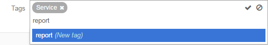
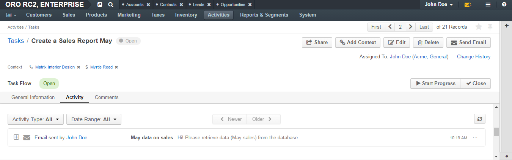
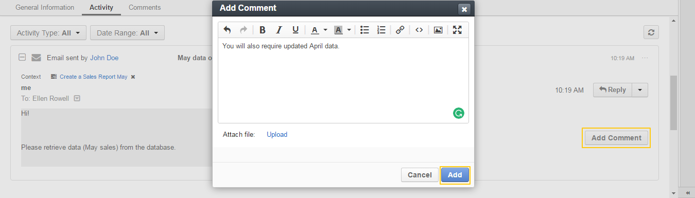
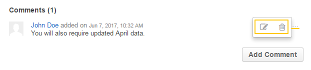
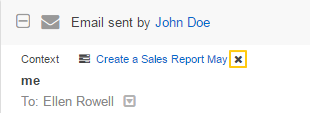
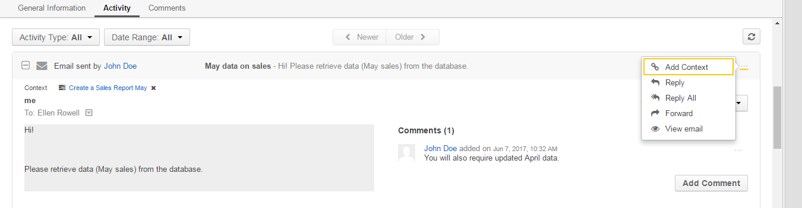
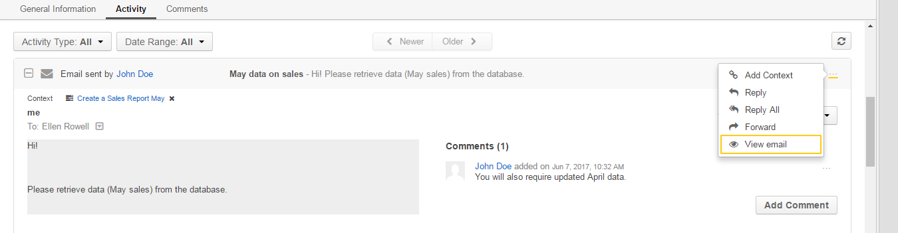
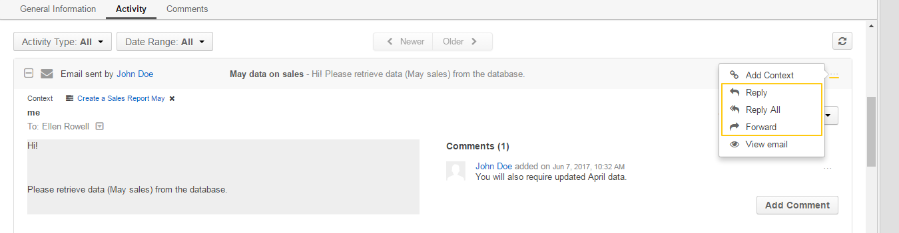
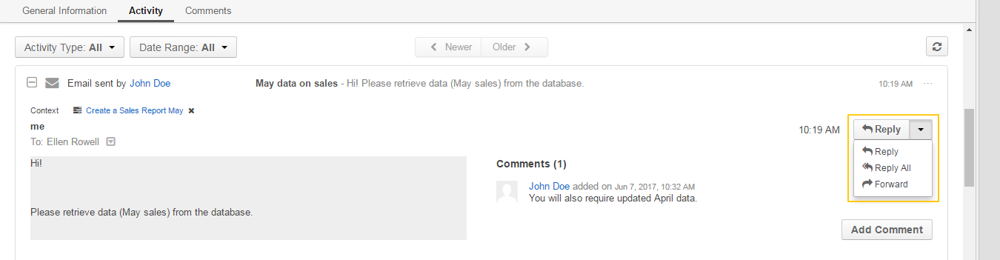

On the upper-left of the page, you can see the task subject (it serves as a name of the task). Next to it you can see the task status—whether it is open, in progress, or closed (for status descriptions, see the Task Statuses section).
The next row contains a list of contexts associated with this task. To delete a task context, click the x icon next to it. See the Remove a Context from a Task action description.
The following set of action buttons is available in the upper-right part of the page:
In the next row you can check which user this task is assigned to. Click the assignee name to open the corresponding user view page. Enclosed in parentheses, there is the name of organization that the assignee belongs too. Click the Change History link to see who, how, and when modified the task.
By default, a task can have the following statuses:
When the Task Flow workflow is enabled in the Oro application, this section contains transition buttons that help direct you through phases of work on the task.
Available options depend on the current status of the task. The following table describes which options are available for each of the statuses and how the corresponding transitions chane the task status.
| Current Status | Available Options | New Status |
|---|---|---|
| Open | Click Start Progress to start working on this task. | In Progress |
| Click Close to close the task. | Closed | |
| In Progress | Click Stop Progress to denote that you have stopped working on this task, but the task is not yet completed. (E.g., the description of what neds to be done for this task is to be readjusted.) | Open |
| Click Close to close the task. | Closed | |
| Closed | Click Reopen to actualize the task again. | Open |
For status descriptions, see the Task Statuses section.
This section contains the main information about a task.
| Field | Description |
|---|---|
| Subject | Short, one-phrase description of what the task is about. |
| Description | Detailed statement of what work is to be done in relation to the task. |
| Due Date | The day and time when the task must be completed. |
| Priority | Nominates an order in which the task should be managed. Can be High, Normal, or Low. Higher-priority tasks should be managed first. |
| Assigned To | The user who is responsible for doing the work related to the task. |
| Tags | A list of tags added to the task. Point to the the tags name (or N/A if no tags are defined) and click the Edit icon next to them to add a new tag.  |
This section contains information about the activities related to the task. By default, the Task entity has only the Email activity enabled.
You can filter activities by type and by date range when they took or will take place and browse them from the newest to the oldest and vice verse.
You can see who started the activity, its type, name and description, when it was created and number of comments added under it.
Click the activity to see detailed information about it.
You can add a comment under a particular activity. To do this, click the activity to expand it and click the Add Comment button. In the Add Comment dialog, type your message. Use the built-in text editor to format your comment. You can also attach a file to your comment. For this, click the Upload link in the dialog and locate the required file. When the comment is ready, click Add.
To edit or delete a comment, click the ellipsis menu next to it and click the Edit or Delete icon correspondingly.
You can add and delete an activity context.
To delete a context for an activity, click the x icon next to the required context.
To add a context to the activity, click the Context icon in the ellipsis menu at the end of the activity row. In the Add Context Entity dialog, choose the desired context and click it to select.
You can open an activity view page. To do this, click the View email in the ellipsis menu at the end of the activity row.
For an email activity, you can reply / reply all / forward the corresponding email. To do this, click the corresponding icon in the ellipsis menu at the end of the activity row.
Alternatively, you can select the required action from the list in the activity expanded area.
For more information about activities, see the Activities guide.
In this section you can find comments made by users on a task.
Click the Comment button to add your comment. For more information, see the Comment a Task action description.